Dhaka, Bangladesh — open to embedded systems roles
I build the firmware that makes hardware do its job.
Embedded engineer across firmware, hardware and IoT: two years of
embedded C on VxWorks at MIPS carrier switches — task
scheduling, semaphores, message queues, timers, interrupts and
socket I/O — with the pointer, byte-order and alignment
discipline firmware demands.
At the device-network boundary I wrote a TFTP server with its own
IPv4/UDP stack over raw Ethernet and an 802.1Q shim; below that I
work in UART, I2C, SPI and ADC on AVR, ESP32 and STM32, and took an
IoT sensor station from breadboard to fabricated PCB.
Embedded C on VxWorks and Linux L3 switches and chassis platforms,
in the Bangladesh R&D centre of a Chinese carrier equipment
vendor, until its closure following FS Innovation’s
acquisition of BDCOM.
Phase 2
Sept 2025 – July 2026
MPLS L3VPN, VRF and the platform migration
Owned the IPv6 routing module through
MPLS L3VPN and 6PE/6vPE —
the integration point for BGP, RIPng, BFD, MPLS and hardware.
Reconciled headquarters’ 76-page specification
with the live code, then built to it.
Rebuilt it on the Linux and VPP platform as a
unified VRF — one configuration model
replacing the separate IPv4 and IPv6 structures — designing
around what Linux and VPP do differently from VxWorks, and wrote the
20,000-word specification for it.
Wrote the MIPS stack-backtrace macro the team
debugs with, and used it to root-cause crashes on live stacks under
load.
Found memory-safety defects across module
boundaries — leaks, pointer corruption and object lifetime
— in other teams’ modules as often as my own.
Found VRF identifiers colliding with the Linux kernel’s
reserved routing-table IDs — an assumption unchanged since
2004, now reserved in the specification.
Phase 1
May 2024 – Sept 2025
RIP, OSPF and the routing core
Daily work against VxWorks RTOS primitives —
task scheduling and priorities, semaphores, message queues,
watchdog and interval timers, interrupts, socket I/O.
RIP and OSPF to source-code depth — RFCs
2453, 2328, 3101 and 3623 — building system test suites and
tracing SPF, NSSA and Type-7 translation through the VxWorks
implementation.
Found an RFC 2453 violation where RIPv1 treated a
/32 host route as a /8 network, a looping restart in the GRE tunnel
forwarding path, and OSPF emitting Hellos with stale neighbours
after Graceful Restart.
Shipped an OSPF command extension to customer
request, and root-caused a pre-existing defect in the same command
while testing it.
Built the AI automation toolchain the team uses
daily: MCP servers putting BDCOM and
Cisco switches under AI agent control over
SSH/Telnet, and editing a GBK codebase byte-exactly.
Raised GNS3 lab capacity ten-fold with a
breakout-switch design, and wrote a VLAN-aware TFTP server
in C — its own IP and UDP stack over raw frames — to
carry 802.1Q-tagged transfers. Both adopted office-wide.
Wrote the routing-module reference the team still works from —
RIB versus FIB, radix trees, control and data plane separation,
switchover, stacking. Administered the chassis lab and onboarded new
engineers.
2025 mid-year evaluation
“Specialized research spirit, independent thinking ability, and
analytical skills.”
— named to the R&D centre
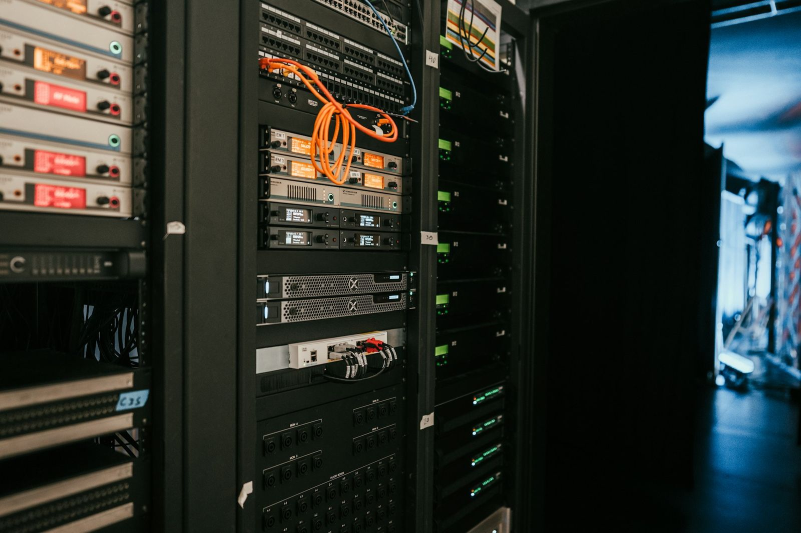
Racks like these are where this firmware ran — console cable in one
hand, packet capture in the other. Stock image.
Photo by Kevin Ache on Unsplash
02 — Selected work
Five projects, opened up.
The CV lists the projects. These five have enough engineering behind
them to show the work: the problem, the decisions, and the artifacts
that make the claims checkable.
01
2020 · Arduino C++ · ATmega328P / ATtiny45
Automatic railway gate control
HardwareControl
A level-crossing controller: two ATtiny45 detector boards on the
approaches, an ATmega328P gate controller, and HC-05 links across
the track.
Each detector board carries two IR pairs 6.6 cm apart and a
44E402 Hall sensor. The ATtiny45 times the two IR triggers to
estimate the train’s speed and direction; the Hall sensor must
agree, or the reading is ignored as noise. The gate controller
receives the event over HC-05, checks an HC-SR04 sonar for
obstructions under the gate, and drives the servo bar. A 16×2
LCD and buzzer announce the train and warn when the gate closes.
Two IR pairs per detector, 6.6 cm apart, time the train and estimate speed
44E402 Hall sensor must agree with the IR trigger; otherwise ignored as noise
ATtiny45 detector boards on both approaches; ATmega328P gate controller
HC-05 links train detection to the gate controller
HC-SR04 sonar interlock under the gate; 16×2 LCD and buzzer
Two EAGLE PCB designs, fabricated in-house
ETE 2200 project · three AVRs · two PCB designs
ATmega328PATtiny45IR44E402HC-05HC-SR04ServoLCDPCB
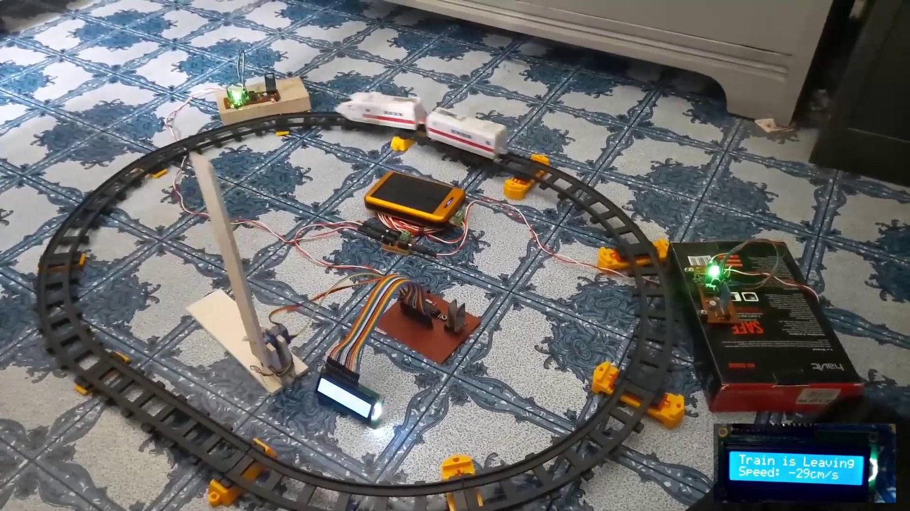
Working prototype: track, servo gate, detector boards and gate
controller; inset shows the LCD speed readout. Project photo, 2020.
Open full-size photo ↗
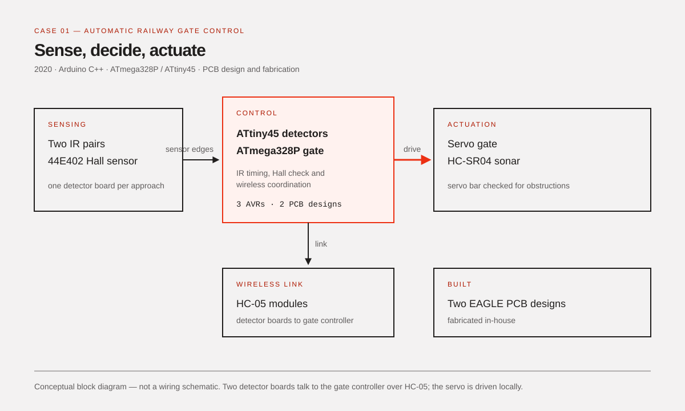
Architecture: two detector boards, one gate controller, and the
HC-05 link between them.
Open full-size diagram ↗
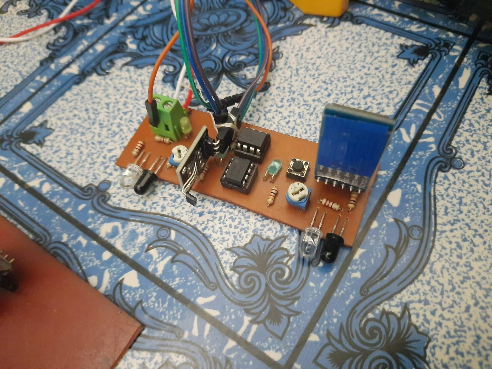
Detector board: two IR pairs, 44E402 Hall sensor and ATtiny45.
Project photo, 2020.
Open full-size photo ↗
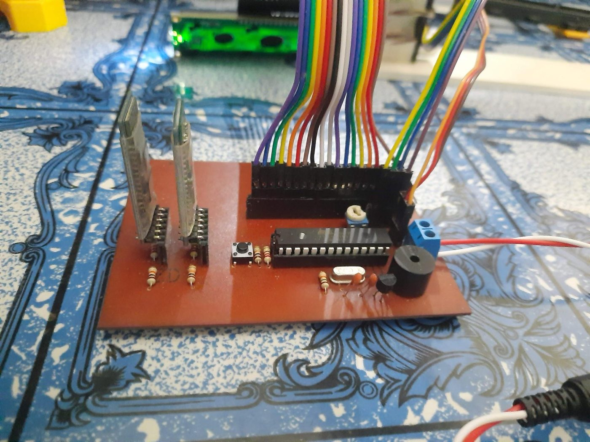
Gate controller: ATmega328P, LCD ribbon and radio links. Project
photo, 2020.
Open full-size photo ↗
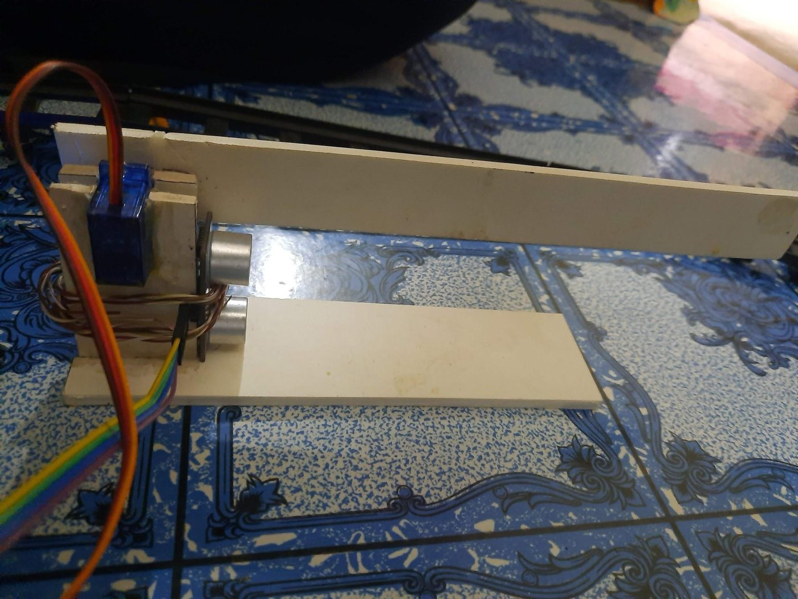
Servo-driven gate model from the working demo. Project photo,
2020.
Open full-size photo ↗
02
2022 · ESP32 / ATmega328P · MicroPython + Arduino C++
IoT weather station
IoTFirmware
A weather station where the AVR counts the wind and the ESP32 owns
the display, storage and network.
The anemometer turns a slotted disc past three IR sensors; the AVR
counts 45° steps, packs the 16-bit total into an I2C payload,
and hands it to the ESP32 with the other sensors. The ESP32
renders, logs and publishes the reading.
AVR polls three IR sensors and counts 45° steps
LM339 comparators and a threshold potentiometer on the sensor board
16-bit total packed into the I2C payload
ESP32 drives TFT and SD over SPI; display guarded by a mutex
Assembled main board: ESP32, ATmega328P, ILI9225 TFT, BMP180,
DHT11, microSD and rotary encoder. Project photo, 2022.
Open full-size photo ↗
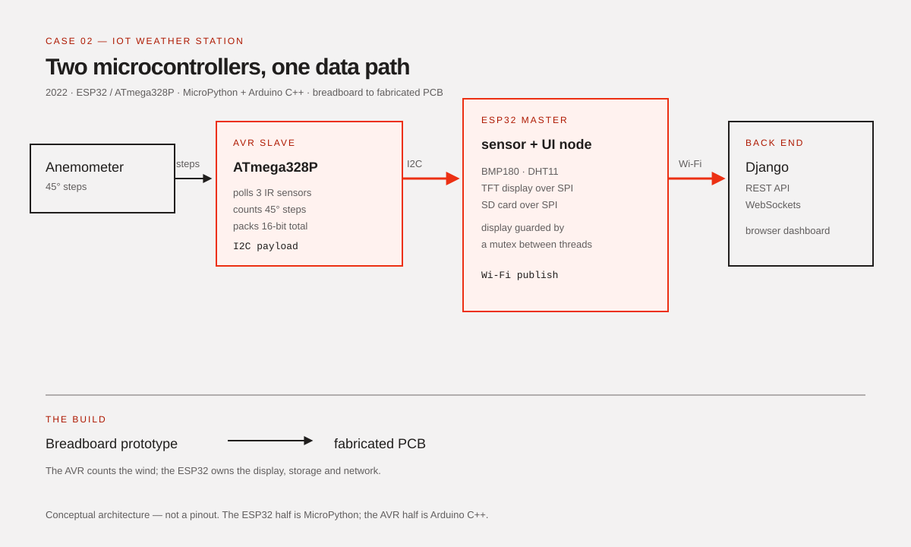
Architecture: the AVR counts the wind; the ESP32 owns the display,
storage and network.
Open full-size diagram ↗
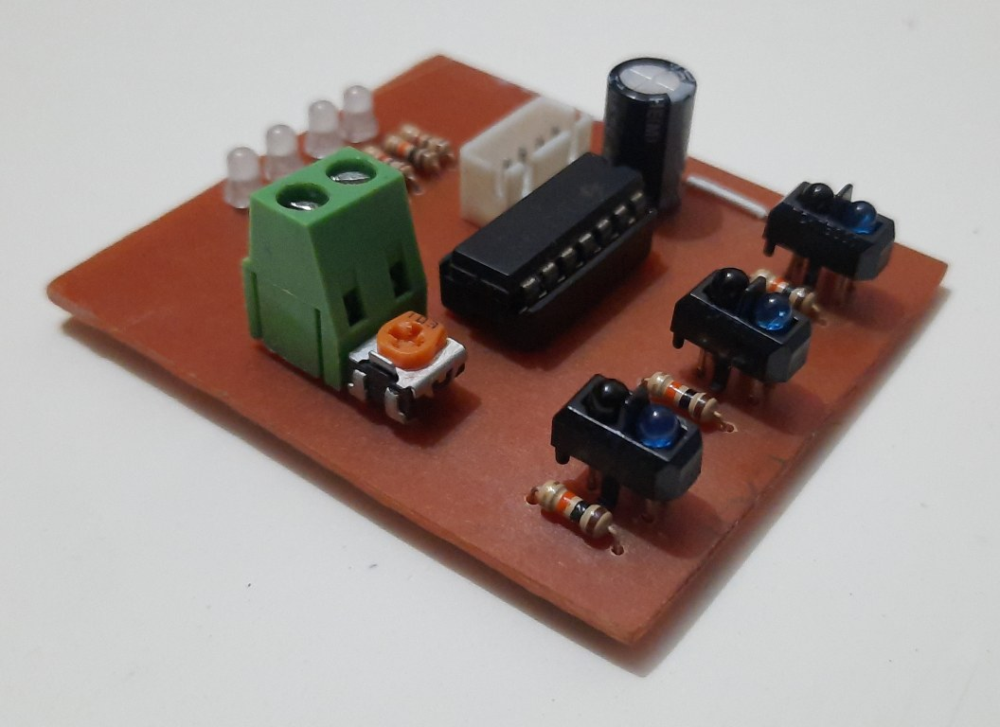
Sensor board: three IR reflective sensors, LM339 comparators and a
threshold potentiometer. Project photo, 2022.
Open full-size photo ↗
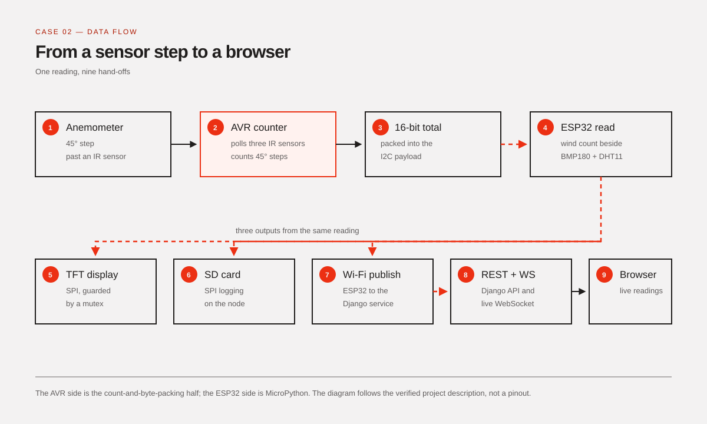
Data path from a sensor step to the browser, including the two
parallel local outputs.
Open full-size diagram ↗
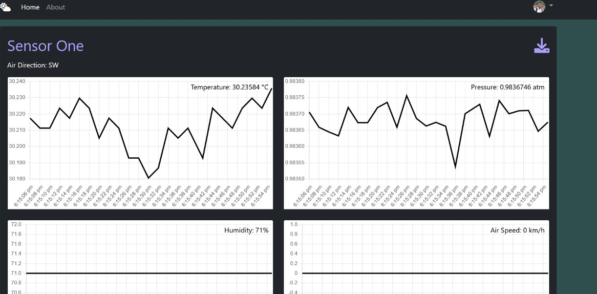
Live Django dashboard: temperature, pressure, humidity and air
speed from the station. Project screenshot, 2022.
Open full-size screenshot ↗
03
2025 · C · pcap raw frames · no OS network stack
TFTP_VLAN
Office standardNetworking
A TFTP server that carries its own Ethernet, 802.1Q, ARP, ICMP,
IPv4 and UDP implementations over pcap frames.
The server works directly on the captured frame: it answers ARP
and ping itself, builds and validates every header, and keeps the
data path independent of the operating system’s network
stack.
No OS network stack beneath the server
Ethernet, 802.1Q, ARP, ICMP, IPv4 and UDP hand-written
Transmit-side fragmentation; UDP checksums over the pseudo-header
RFC 2348/2349/7440 options with sliding-window transfer
Malformed frames dropped at the earliest provable layer
Protocol stack: every layer below the application is implemented
in-process over pcap frames.
Open full-size diagram ↗
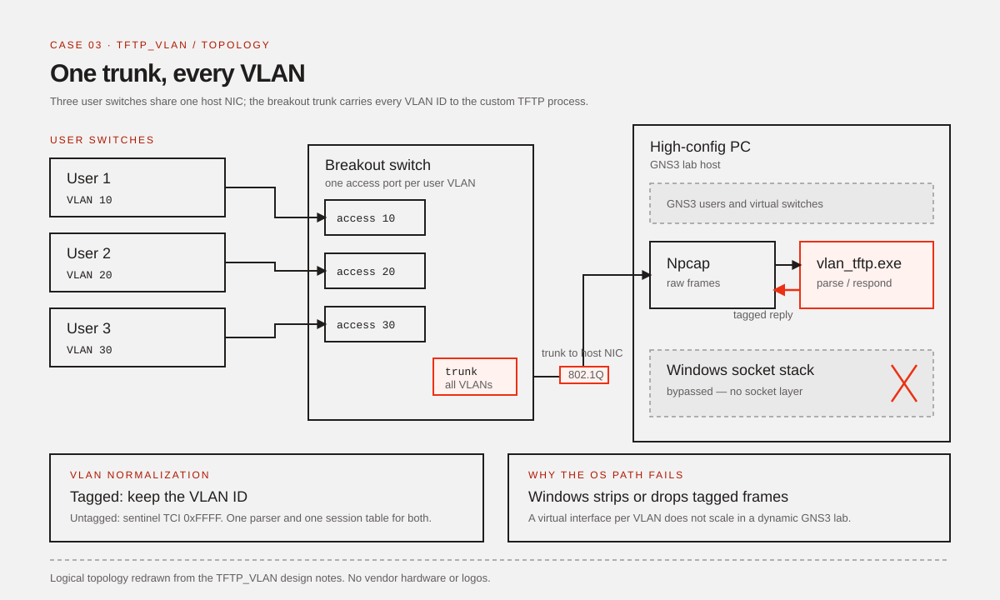
Topology: user switches reach one host NIC through a breakout
switch; the trunk carries every VLAN ID to Npcap and
vlan_tftp.exe.
Open full-size diagram ↗
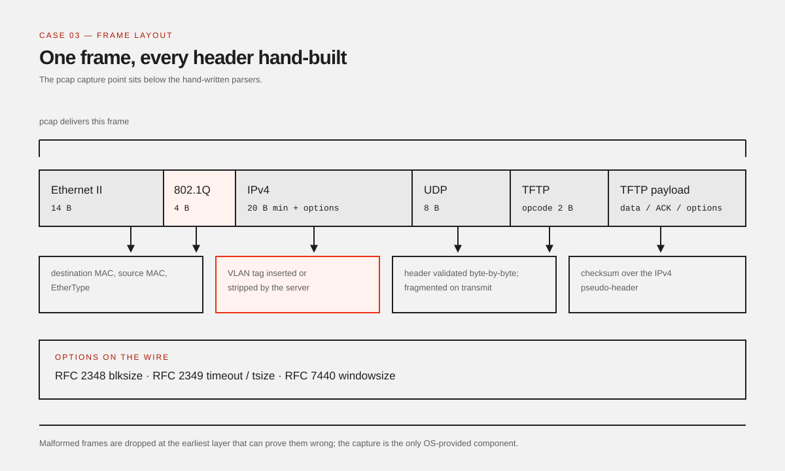
802.1Q-tagged frame layout, with the checksum and fragmentation
work at each boundary.
Open full-size diagram ↗
04
2026 · C · STM32 HAL / AVR · Proteus simulation
Voltage protector
FirmwareProtection
A 220 V / 50 Hz protection controller that measures
voltage and current, opens the load relay on a fault, and
reconnects only when the grid is stable again.
The Proteus grid feeds a 220 V lamp. A transformer and
MCP6001 stage bring the voltage channel to PA2; an ACS712-20A and
a 10k/20k divider bring the current channel to PA3. ADC1 scans
both channels into a circular DMA buffer. Forty sample pairs make
a 20.16 ms window — roughly one mains cycle — and
the DMA callback only accumulates integer sums. The main loop
removes the 1.65 V bias and computes RMS.
Protection is inverse-time. Mild over-voltage, under-voltage and
I²t overload accumulate heat per window; a saturated ADC,
≥1.25× OVP, <0.5× UVP or ≥2× OCP trips
in one window. Over/under-voltage trips reconnect after the grid
stays inside the hysteresis band for the configured delay;
over-current and short-circuit trips latch until RESET. PA1 is
low at reset, so the relay is open unless firmware closes it.
USART1 at 115200 takes STATUS/GET/SET/CAL/SAVE/RESET/RELAY
commands; settings live in the last flash page with a magic
number and checksum.
STM32F103C8: ADC1 scan + circular DMA; 40 pairs ≈ 20 ms; integer sums in the ISR
Transformer + MCP6001 voltage front end; ACS712-20A current sensor with 10k/20k divider
Inverse-time OVP/UVP/I²t OCP; one-window trips for large surge, blackout, short circuit or ADC rail
PA1 low at reset; OV/UV auto-reconnect after hysteresis delay; OC/short latch until RESET
USART1 115200 configuration; settings in the last flash page with magic + checksum
Signal path: two analog front ends feed ADC1/DMA; the main loop
computes RMS and runs the inverse-time protection state machine.
Conceptual diagram, not a wiring diagram.
Open full-size diagram ↗
Scope
Proteus simulation only — no hardware prototype.
Protection evaluates 20 ms windows, so a shorter spike
can pass. Configuration and status are over UART; there is
no display or buttons.
Calibration
224 V / 2.22 A reference → 1400 V/V and
15 A/V. The 10 Ω short logged
219.6 V / 19.71 A.
Over-voltage test: injected surge; the trip log records
365.6 V / 3.62 A and PA1 opens the relay. Proteus capture.
Open capture ↗Full Proteus capture ↗
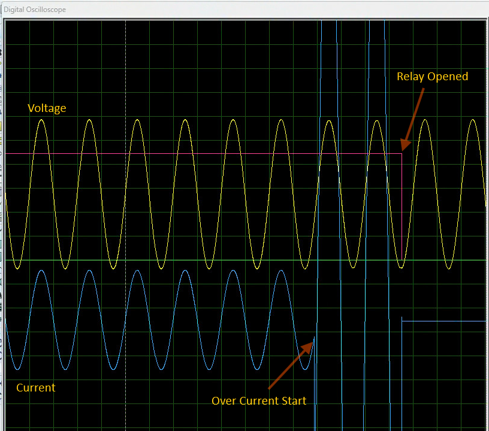
Short-circuit test: 10 Ω fault; the trip log records
219.6 V / 19.71 A and the relay latches open until RESET.
Proteus capture.
Open capture ↗Full Proteus capture ↗
05
2026 · Python · FastMCP / MCP · SSH & Telnet
device_mcp
AI integrationAutomation
A FastMCP server that turns a network device’s CLI into a
tool surface an AI assistant can use: connect over SSH or Telnet,
run one command or an atomic config block, answer confirmation
prompts, and read the console back.
Sending a command is the easy part. The hard part is knowing which
prompt the device is sitting at, whether a rejected line stopped a
configuration block, and whether the session died or the transport
did. The server keeps a persistent session per
host:port, handles mode changes and paging, and
returns the raw output with a parsed status footer on every call.
A model can then retry, correct or stop without guessing.
It ships with a netmiko transport for Cisco IOS and 400+ platforms,
plus a small custom BDCOM driver. The stock netmiko setup fails on
BDCOM: terminal width is unsupported, and
terminal length 0 only works in enable mode, so paging
stays on and the next large show desyncs at
--More--. The driver enters enable first, disables
paging there, uses config rather than
configure terminal, and exits config with Ctrl-Z.
The current surface is seven session and CLI tools. File-transfer
and firmware-recovery wrappers are implemented and unit-tested but
left commented out in the server, so they are not exposed as tools.
The session core is covered by an emulator-backed integration suite
and an offline smoke test.
Sessions keyed host:port; one IP can fan out to several console lines, each with its own mode, buffer and audit file
Modes auto, user, enable, config and raw; auto never downgrades, config applies a list atomically, raw reaches the bootloader monitor#
Custom BDCOM driver: config, Switch_config# prompts, Ctrl-Z exit, paging disabled only in enable; avoids the --More-- desync
Result footer separates device errors from transport failures, adds Cisco→BDCOM hints and reports the parsed mode as now:
Always-on console transcript per connection; idle polling captures reboot progress and unsolicited output when no tool call is running
Emulator-backed integration tests cover connect, auth, paging, config, help, confirmations and session termination; an offline smoke test checks the tool registry and host:port resolution
End-to-end path: the assistant calls tools over MCP; the server
owns the persistent SSH/Telnet session, mode handling and audit
transcript. Conceptual diagram, not a deployment diagram.
Open full-size diagram ↗
Scope
The public surface is the seven session and CLI tools.
transfer_file, upgrade_firmware,
enter_monitor_mode and
recover_firmware are implemented and tested but
commented out in server.py; they are not
advertised to the model.
Safety
Credentials are passed per connection and not stored. The
always-on transcript captures raw I/O and can contain plaintext
secrets, so logs/ is git-ignored and treated as
sensitive. SSH-key auth and a credential vault are not
implemented.
Session and mode model: auto keeps the current
privilege, config applies a list atomically, and
raw drives unfamiliar prompts. Mode labels come from
the prompt suffix, so the hostname does not matter.
Open full-size diagram ↗
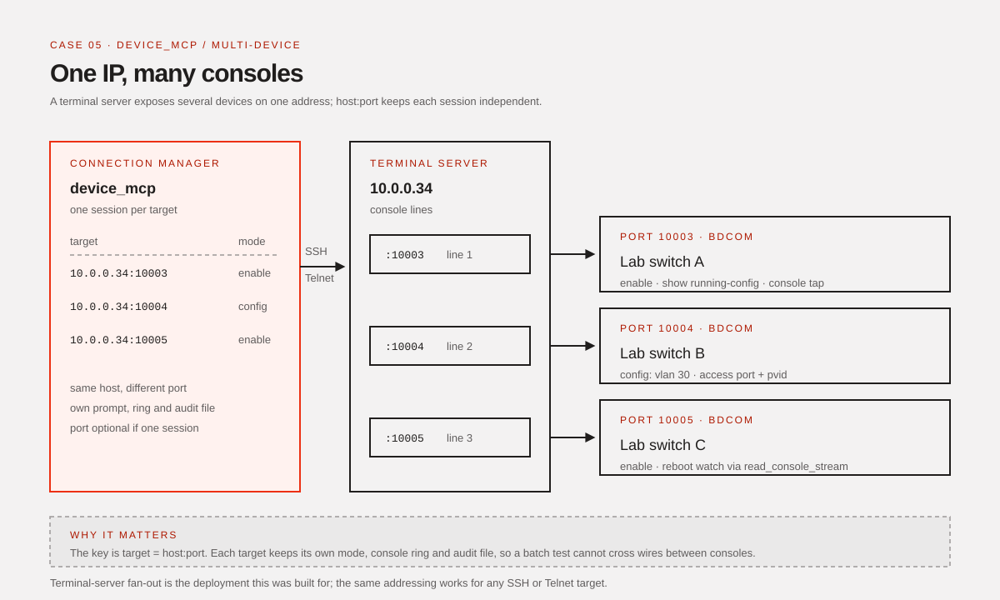
One terminal server, three consoles: connections are keyed by
host:port, so each device keeps an independent mode,
ring buffer and audit file. port can be omitted when
the host has a single connection.
Open full-size diagram ↗
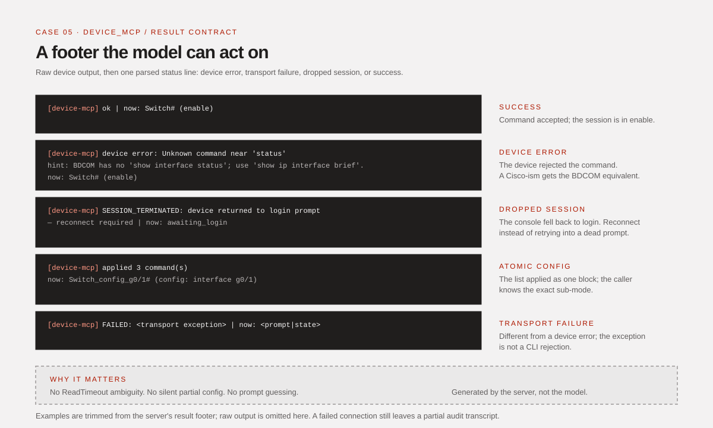
The result contract: raw device output followed by one parsed
footer. Device errors, transport failures and dropped sessions are
distinct states, and now: names the CLI context the
next call starts from.
Open full-size diagram ↗
Two motors, each direction on its own PWM channel, commanded over a
hardware UART from an RC receiver. The PWM carrier was raised
eight-fold by rewriting the AVR timer prescaler bits directly rather
than through the framework, with left/right speed trim and input
smoothing on top.
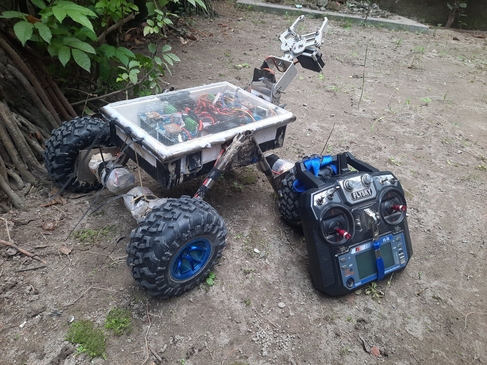
2022 — Arduino C++Robotics
Mud Rover 2.0
FlySky iBUS control and a servo claw
FlySky FS-i6/FS-iA6B receiver over iBUS, with the stick square mapped
to a circular envelope and sin/cos differential mixing. Receiver-loss
failsafe, an arming switch and LED fault codes; a servo claw on the
front.
Smaller builds and tools that support the same work.
2026 — COffice standard
vlan_bridge
Transparent 802.1Q shim
Puts a host whose network card cannot tag onto a tagged trunk:
802.1Q inserted on the way out, stripped on the way in and
re-injected so the local stack sees ordinary packets. Recomputes the
IP, TCP, UDP and ICMP checksums the card left to hardware offload,
and handles the four bytes the tag costs — fragmenting per RFC
791, or dropping the packet and injecting ICMP Fragmentation Needed
when Don’t Fragment is set.
Bengali (native), English (professional working proficiency).
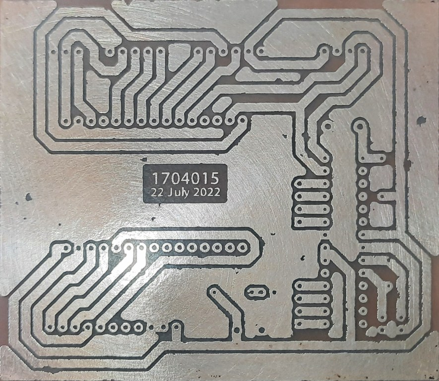
Fabricated main board for the 2022 weather station: etched and
drilled in-house from the EAGLE layout.
Project photo
04 — Research
3 papers, before the firmware.
[1]M. R. Hassen, M. T. Hassan and M. R. Imrose,
“Multi RIS-integrated MIMO wireless communication: end to end
(E2E) learning performance across diverse network scenarios,”
26th International Conference on Computer and Information
Technology (ICCIT), 2023.
Presentation certificateCode repository
[2]
M. R. Imrose, M. T. Hassan and M. R. Hassen,
“A comprehensive study on statistical channel modeling for
outdoor to indoor (O2I) penetration concern of 5G mmWave access
networks,”
6th International Conference on Electrical Information and
Communication Technology (EICT), 2023.
[3]
M. R. Imrose, M. T. Hassan, M. R. Hassen and
M. M. Mowla, “A statistical investigation of spatial
consistency and human blockage consideration based mmWave channel
modeling for 5G back-haul networks,”
International Conference on Electrical, Computer and
Communication Engineering (ECCE), 2023.
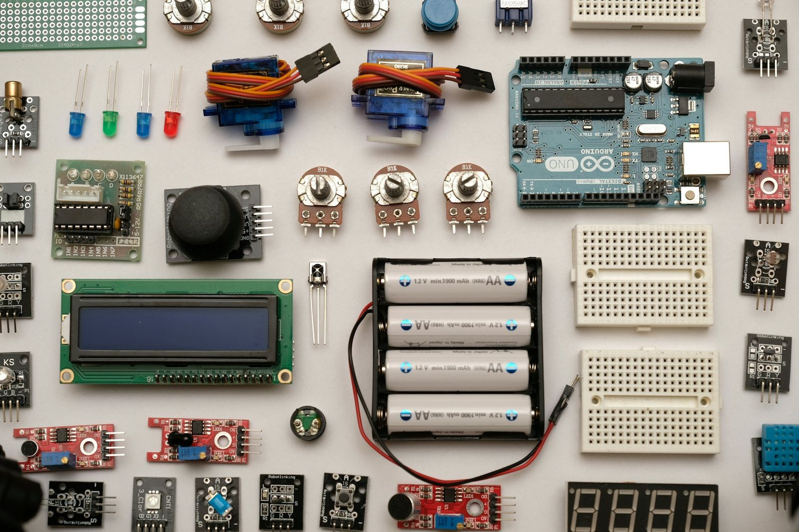
An electronics workbench. Stock image.
Photo by Robin Glauser on Unsplash
05 — Education
B.Sc. in Electronics & Telecommunication Engineering
Rajshahi University of Engineering & Technology · 2018 – 2023